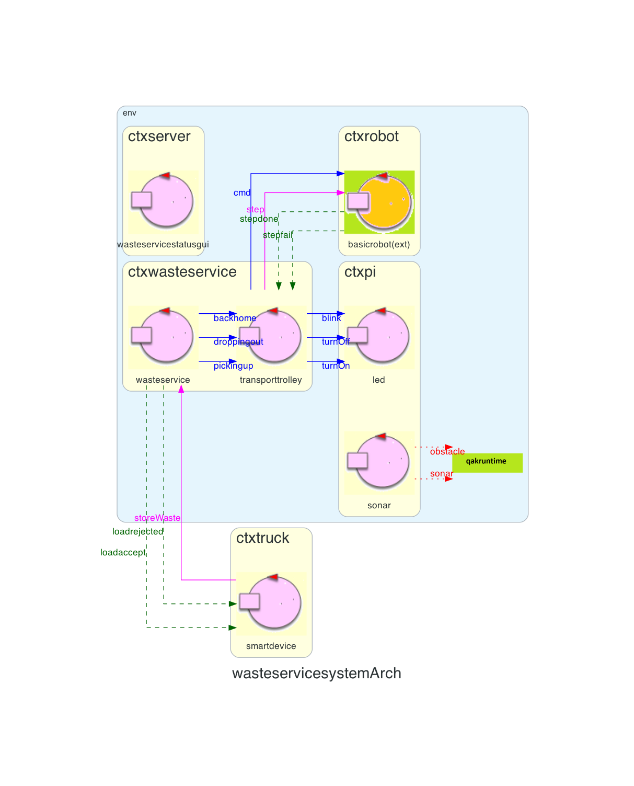

Introduction
At the end of the requirement analysis, reported in Sprint0, the logical architecture is as follows:

In this Sprint we will focus on what for us is theBusiness Core of the system, which will consist of wasteservice, transporttrolley and basicrobot as shown in the figure.

In this Sprint we will focus on what for us is the
Requirements
Problem analysis
Ritorno alla home/Gestione delle nuove richieste
Quando il truck ha scaricato il carico all'indoor, il-
Il transport trolley si invia un automessaggio
forward transporttrolley-m gotohome: gotohome -
Il wasteservice invia un messaggio al transport trolley del tipo
forward transporttrolley-m gotohome: gotohome
Quando il truck deve andare via?
L'interazione con il committente ha evidenziato il fatto che il "truck" deve essere mandato via il prima possibile.Come capire dove si trova il robot? Che tipo di sistema di coordinate devo usare?
By students:
Name: Annamaria Simonitto, Enrico Valastro, Alessio Reitano
Email: annamaria.simonitto@studio.unibo.it, enrico.valastro@studio.unibo.it, alessio.reitano@studio.unibo.it